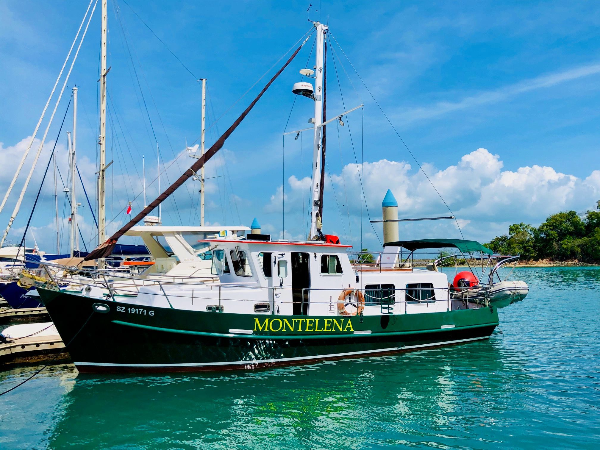

Seahorse Coot 35 Steel Pocket Trawler
2005–2021
The Seahorse 35 Pilothouse is retained as a provisional B-Scout model because surviving-market evidence suggests the identity exists, but the current source set does not establish a complete factory specification or production history. Its recorded configuration should therefore be treated as a research lead rather than a fully verified model standard.

- Length
- 35 ft
- Beam
- 13 ft
- Draft
- 4 ft
- Hull behaviour
- Semi-Displacement
- Fuel
- Diesel
- Propulsion
- Shaft
- Engine configuration
- Single Inboard
- Boat family
- Trawler
- Construction
- Fiberglass
Best for
- Experienced buyers willing to verify an uncommon model from primary hull documentation
Trade-offs
- Documentation is sparse and marketplace naming may be inconsistent
- Hull-specific condition and equipment dominate the buying decision
- Factory-standard dimensions and systems are not yet sufficiently verified
Known concerns
- No model-specific concern has been promoted to B-Scout’s evidence threshold. This does not mean the model has no age-, condition- or hull-specific risks.
Inspection focus
- Confirm builder plate, HIN, model designation and year before relying on B-Scout specifications
- Obtain prior surveys, manuals and original documentation where available
- Inspect decks, windows, structure, tanks, wiring and plumbing
- Inspect engines, exhaust, cooling, shafts, rudders and steering
- Verify actual dimensions, tankage and air draft
Continue researching
Related boat models
38 ft · Semi-Displacement
35 ft · Semi-Displacement
34.92 ft · Semi-Displacement
34.5 ft · Semi-Displacement
34.42 ft · Semi-Displacement
35.67 ft · Semi-Displacement
About this record
B-Scout preserves uncertainty: missing information remains unknown rather than being treated as a negative. Specifications and guidance describe the model record; individual boats can differ by year, equipment, refit and condition.